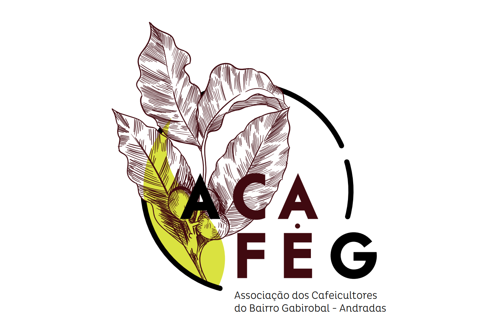

Raízes profundas
numa terra extraordinária

Uma associação nascida
da terra e das pessoas
A ACAFEG – Associação dos Cafeicultores do Bairro Gabirobal nasceu da iniciativa de um grupo de associados familiares da zona rural de Andradas.
O nome da associação representa essa união dos cafeicultores da comunidade (bairro) do Gabirobal, em Andradas, no sul de Minas Gerais, onde tudo começou — uma região tradicionalmente reconhecida pela produção de cafés de qualidade em regiões de altitude e pela forte presença da agricultura familiar.
A associação foi criada com o propósito de organizar os associados, promover capacitações, incentivar boas práticas agrícolas e ambientais e acessar mercados diferenciados, especialmente dentro dos princípios do Comércio Justo.
Localizada no extremo sul de Minas Gerais, Andradas possui características geoclimáticas raras: lavouras entre 900 e 1.400 metros, chuvas bem distribuídas e solos de origem vulcânica com alto teor de matéria orgânica — condições que resultam em grãos de acidez equilibrada, corpo cremoso e notas sensoriais únicas.
Cada ano, um novo capítulo
Uma trajetória construída com paciência, dedicação e muito café.
Fundação da ACAFEG
Nasce a ACAFEG, com o objetivo de buscar uma comercialização mais justa, capacitação para os associados e cuidado com o meio ambiente. As reuniões aconteciam no barracão da igreja do bairro Gabirobal.
Certificação Fairtrade
Primeira auditoria e certificação Fairtrade, iniciando as primeiras comercializações com o selo de Comércio Justo.
Novos parceiros
Início da parceria com a NKG Stockler, hoje um dos principais compradores da associação, e aquisição do primeiro veículo próprio.
Sede própria
Inauguração da sede própria, com escritório, sala de classificação e sala de prova. Neste ano, os associados destinaram o prêmio do Comércio Justo para apoiar o hospital de Andradas.
Parceria com a Delica AG
Formalização da parceria com a empresa suíça Delica AG: o café da ACAFEG passa a integrar o projeto Impact Café Royal, tornando-se o único café Fairtrade do Brasil no projeto. Inauguração do estúdio de Pilates da sede.
Profissionalização
Início de novos projetos com apoio de consultoria para políticas, indicadores e relatórios de sustentabilidade, além de uma forte aproximação das mulheres da associação.
Café das Mulheres
Realização da 4ª edição do Andradas Café Festival e lançamento do primeiro lote do Café das Mulheres ACAFEG, fruto do projeto Acolhida.